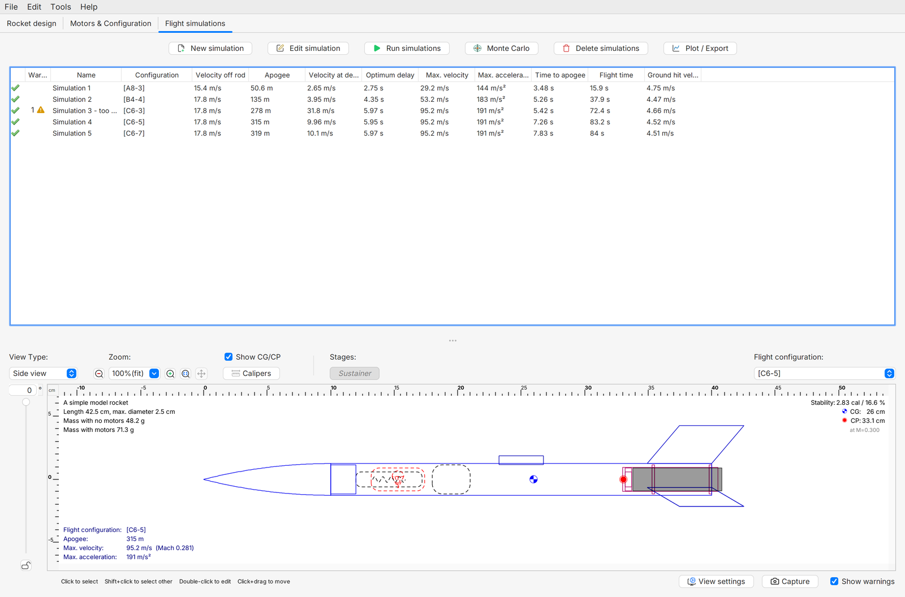
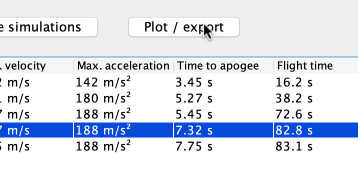
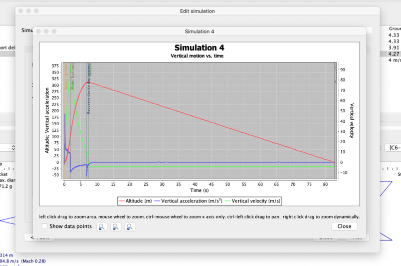

Primera simulación completa en OpenRocket
Configurar el modelo completo, ejecutar una simulación guiada y leer sus fases sin confundir predicción con observación.
Qué debe estar completo antes de simular
La primera geometría de la clase 1 enseñó a colocar piezas. Una simulación de vuelo necesita más información: componentes interiores, masas, configuración comercial, recuperación y condiciones de salida. El programa puede calcular con un archivo incompleto, pero el resultado describirá ese archivo y no el cohete que se está construyendo.

Entradas que debe revisar el equipo
| Grupo | Comprobación |
|---|---|
| Geometría | Coincide con el plano y las piezas |
| Masas | Incluyen los elementos del conjunto |
| Motor comercial | Referencia y configuración correctas |
| Recuperación | Sistema y evento representados |
| Condiciones | Lugar y condiciones declarados |
El objetivo no es obtener la cifra más alta. Es contar con una predicción que podamos entender, conservar y revisar cuando el objeto esté terminado.
Una simulación conecta entradas con una predicción mediante un modelo. Las entradas describen piezas, masas, motor, recuperación y ambiente. El resultado puede verse muy preciso en pantalla aunque una entrada sea equivocada. La tarea inicial consiste en hacer corresponder el archivo con el objeto previsto. Esta revisión es parte del trabajo técnico, no un trámite anterior a la parte interesante. Permite entender después qué significa una curva y qué limitaciones tiene.
Leer el vuelo como una secuencia

La fase impulsada termina cuando cesa el empuje. El cohete puede seguir subiendo después, mientras pierde velocidad. La altura máxima se llama apogeo. Después llega el descenso y el sistema de recuperación cumple su función. Separar esos eventos evita pensar que el motor empuja hasta la altura máxima.
Qué se lee en las gráficas
| Variable | Pregunta sencilla |
|---|---|
| Altura | ¿Cuándo llega al punto más alto? |
| Velocidad vertical | ¿Cuándo deja de subir? |
| Empuje | ¿Cuándo termina la fase impulsada? |
| Evento de recuperación | ¿Dónde aparece respecto al apogeo? |
Una sola gráfica de altura puede ocultar un evento importante. En esta clase se leerán pocas variables, con unidades y marcas de eventos. No hace falta estudiar decenas de curvas para revisar un primer vehículo. [FL, OR3]
Altura, velocidad y aceleración responden a preguntas distintas. La altura indica posición vertical respecto al origen elegido. La velocidad indica cómo cambia esa posición. La aceleración indica cómo cambia la velocidad. El vehículo puede seguir ascendiendo después de terminar el empuje porque todavía tiene velocidad hacia arriba. Cerca del punto más alto, esa componente de velocidad pasa por cero antes del descenso. Identificar esos momentos en una gráfica ayuda más al principiante que memorizar nombres de curvas.
Preparar una configuración identificada
Una configuración relaciona el vehículo con un motor comercial y sus eventos. Debe tener un nombre que permita reconocer qué se simuló. Si cambias la nariz, la masa o el motor, conserva una versión diferente. Sobrescribir el archivo cada vez hace difícil explicar después por qué cambió una predicción.
- Guarda una copia del archivo revisado con nombre CONFIG_A.
- Selecciona el conjunto comercial indicado por el docente y comprueba su referencia completa.
- Verifica la representación de recuperación y los eventos que corresponden al sistema elegido.
- Registra las condiciones de la simulación. No uses valores por defecto sin leer qué significan.
- Describe la guía de salida utilizada por el equipo docente y su correspondencia en el modelo.
Un cambio que invalida la comparación
Ayer se simuló un archivo sin acabado y hoy se pesa el modelo con acabado y otras uniones.
Razonamiento del caso
Actualiza la masa y la configuración antes de comparar la predicción con el objeto. Conservar el nombre CONFIG_A no vuelve iguales dos conjuntos distintos.
El responsable revisa las condiciones operativas. El alumno aprende a representarlas y a detectar entradas incoherentes; no necesita decidir por su cuenta una condición de lanzamiento.
Los avisos del programa se leen como preguntas sobre el modelo. Un evento extraño puede revelar un dispositivo de recuperación configurado con una referencia equivocada o una pieza omitida. Cambiar varias entradas hasta que desaparezca un aviso dificulta aprender qué lo causó. El equipo guarda una referencia, revisa una condición y vuelve a ejecutar, registrando la razón de cada modificación.
Práctica: ejecutar, mirar y exportar

- Crea o edita la simulación correspondiente a CONFIG_A y revisa las condiciones de entrada.
- Ejecuta según la interfaz de la versión instalada y lee avisos antes de aceptar los resultados.
- Abre Plot / Export y elige tiempo en el eje horizontal.
- Representa altura y velocidad vertical con sus unidades. Activa las marcas de eventos relevantes.
- Anota apogeo, fin de empuje y evento de recuperación. Comprueba que pertenecen a la misma simulación.
- Exporta un CSV con tiempo, variables seleccionadas y las condiciones guardadas en el expediente.
Las capturas de este material pertenecen al manual oficial. Cada equipo crea y ejecuta su propio archivo en clase. Una fila de apogeo aislada no sustituye la configuración ni las gráficas que permiten interpretarla. [OR3]
La exportación convierte una imagen de pantalla en un registro que se puede revisar. Cada columna necesita nombre, unidad y referencia de tiempo. Dos puntos de una misma curva permiten describir una tendencia sin atribuirle una causa que no se comprobó. El equipo relaciona un evento de la secuencia con su zona en el gráfico y conserva las condiciones de la ejecución. Así otra persona puede abrir el archivo y entender qué se quiso observar.
Una comparación que no mezcle cambios
Para comparar narices o aletas, comienza con una copia del modelo completo. Conserva motor, condiciones y entradas comunes. Si el cambio de geometría implica otra masa real, puedes estudiar dos preguntas: el cambio geométrico idealizado y el cambio del objeto que realmente fabricarías. Debes indicar cuál estás respondiendo.
Registro de la comparación
| Dato | A | B |
|---|---|---|
| Archivo y revisión | Identificar | Identificar |
| Cambio propuesto | Referencia | Describir |
| Motor y condiciones | Conservar | Confirmar |
| Masa y configuración | Registrar | Registrar |
| Resultados y avisos | Exportar | Exportar |
Dos predicciones parecidas
Ejercicio: dos configuraciones didácticas predicen 80 y 82 m, pero la segunda también usa otro motor y otra masa.
Razonamiento del caso
No se puede atribuir la diferencia exclusivamente a la nariz. La comparación mezcló cambios. Recupera una referencia común o explica que se compararon dos configuraciones completas.
No se ofrece un resultado universal de rendimiento para cada forma. La práctica enseña a construir una comparación válida dentro del modelo que el equipo está utilizando.
Una comparación por misión puede dar una decisión diferente a la búsqueda de una cifra de altura. Para aprender a construir, una alternativa de resultado parecido puede ser preferible si ya tiene un encaje repetible y un repuesto. Para el demostrador científico puede pesar el acceso a la carga. Los resultados del programa se incorporan a esa decisión junto con la ficha de taller; no borran los otros requisitos del proyecto.
Interpretar sin prometer el vuelo real

El resultado de un simulador es una predicción. El objeto fabricado, el ambiente y la operación pueden diferir de las entradas. Por eso antes del vuelo se revisa la correspondencia entre archivo y conjunto final. Después se comparan observaciones que realmente se hayan registrado.
Una frase que sí ayuda al docente
“En CONFIG_A, con estas entradas, el programa predice este evento. La masa del conjunto todavía debe actualizarse después del montaje”.
Razonamiento del caso
La frase permite usar la predicción sin presentarla como garantía. También identifica una acción concreta para mejorarla antes de la jornada.
Entrega el archivo completo, una captura de las condiciones, las gráficas elegidas y el CSV. Señala un aviso o limitación que hayas revisado. La tarea de clase consiste en explicar el resultado, no únicamente en hacer clic en simular.
Preguntas de cierre
¿El motor empuja hasta el apogeo?
No necesariamente; el vehículo puede seguir subiendo después de terminar el empuje.
¿Una predicción es una medición?
No. Se compara después con observaciones identificadas.
¿Puedo atribuir a la nariz una diferencia si cambié el motor?
No sin separar o explicar esos cambios.
Entrega
Archivo completo, condiciones, gráficas y CSV exportado.
Bibliografía y procedencia
[OR2] OpenRocket. Getting Started.
[OR3] OpenRocket. Advanced Flight Simulation.
[FL] NASA Glenn. Flight of a Model Rocket.